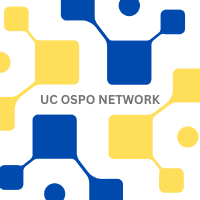

UC Open Source at a Glance
A one-page summary of open source from UC campuses and the UC OSPO Network. Print it or save it as a PDF.

UC Open Source as Institutional Infrastructure
UC OSPO Network · ucospo.net
From Dissertation to Global Infrastructure
Open Source Foundation
1973
INGRES / PostgreSQL
UC Berkeley
Stonebraker and Wong built INGRES and released the code freely. It seeded Sybase and, indirectly, Microsoft SQL Server. Stonebraker's follow-on POSTGRES (1986) pioneered object-relational databases; volunteers turned it into PostgreSQL, now one of the most widely used open source databases. postgresql.org →
1977
BSD Unix
UC Berkeley
The Berkeley Software Distribution and its permissive license. BSD-style licenses, along with MIT and Apache, now govern much of the world's production software. history →
Universal Infrastructure
1986
tz database
UCLA (Paul Eggert)
The Time Zone Database keeps the world's computer clocks on civil time. Paul Eggert of UCLA has contributed since 1991, maintained it since 2005, and served as the IANA Time Zone Coordinator since 2012. A 2011 copyright lawsuit briefly threatened it; IANA has hosted it since. iana.org/time-zones →
Open Science
2000
UCSC Genome Browser
UC Santa Cruz
Jim Kent wrote the program that assembled the first public draft of the human genome, and the sequence stayed in the public domain. The browser is now a reference tool for genomic research worldwide. genome.ucsc.edu →
Scientific Computing & Domain Science
2001
Jupyter
UC Berkeley
Fernando Pérez wrote the first IPython as a graduate student. Project Jupyter won the 2017 ACM Software System Award. Pérez is a co-PI on the UC OSPO Network. jupyter.org →
2001
EEGLAB
UC San Diego
An open source environment for processing electrophysiological signals, with one of the largest citation footprints of any scientific software. eeglab →
2003
Cytoscape
UC San Diego
A standard tool for network biology: disease pathways, protein interactions, and molecular networks. cytoscape.org →
Infrastructure at Scale
2004
Ceph
UC Santa Cruz
Sage Weil’s PhD research on exabyte-scale distributed storage. Its client merged into the Linux kernel in 2010, and money from Ceph’s commercialization funded CROSS at UCSC, the seed of this network. ceph.io →
2009
Apache Spark
UC Berkeley AMPLab
Matei Zaharia’s fast cluster computing engine, donated to the Apache Software Foundation and now an industry standard for large-scale data processing. spark.apache.org →
2010
RISC-V
UC Berkeley
An open instruction set that began as a summer project. RISC-V International has member organizations in 70 countries. riscv.org →
2010
Named Data Networking
UCLA · Lixia Zhang, Lead PI
Zhang was the only woman at the first IETF meeting in 1986. NDN rethinks internet architecture around named data instead of host addresses. named-data.net →
AI Infrastructure
2016
Ray
UC Berkeley RISELab
A framework for scaling Python and AI workloads, now used to train and serve large models in industry. ray.io →
Also from UC campuses
Processing (UCLA)
UCSD Pascal
ChimeraX (UCSF)
OpenMM
sourmash (UC Davis)
ERPLAB (UC Davis)
The UC OSPO Network
8
member campuses in 2026
launched in 2024 with six, with support from the Alfred P. Sloan Foundation
launched in 2024 with six, with support from the Alfred P. Sloan Foundation
Berkeley
Davis
Los Angeles
San Diego
San Francisco
Santa Barbara
Santa Cruz
UC Law SF
Led from UC Santa Cruz. Part of CURIOSS, the global community of academic OSPOs.
What We Found
52K
institutionally affiliated repositories found across 10 UC campuses
58%
of surveyed UC OSS contributors also maintain projects
Top challenge: time to write documentation
Nationally (Tidelift 2024): 60% of maintainers unpaid · 43% burned out
Why It Matters: The Economics
$8.8T
demand-side value of open source software to the firms that use it
Recreating the most-used packages once would cost about $4.15B. If every firm rebuilt them for itself: about $8.8 trillion. Hoffmann, Nagle & Zhou (2024), HBS Working Paper 24-038.
Three Focus Areas
Discovery: UC Open Repository Browser (UC ORB); a GitHub discovery pipeline and a system-wide survey
Sustainability: cross-campus licensing working group; OSSPREY project health assessment; community management
Education: lessons and learning pathways at ucospo.net/education; Carpentries, CodeRefinery, and UC-built content
Resources for Researchers
README.md template + guide
LICENSE guide to common options
CONTRIBUTING.md template + guide
CODE_OF_CONDUCT.md Contributor Covenant
CITATION.cff + Zenodo → citable DOI
More at ucospo.net/oss-resources